Preliminary Results
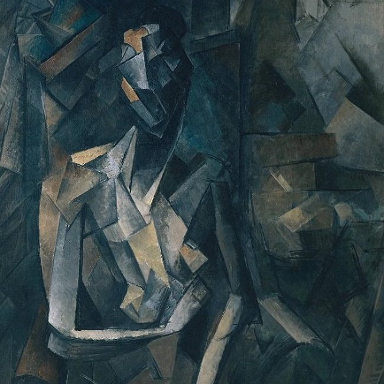
 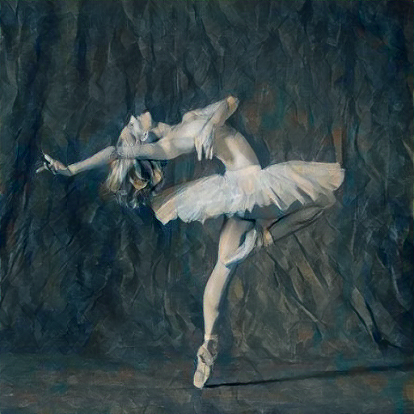
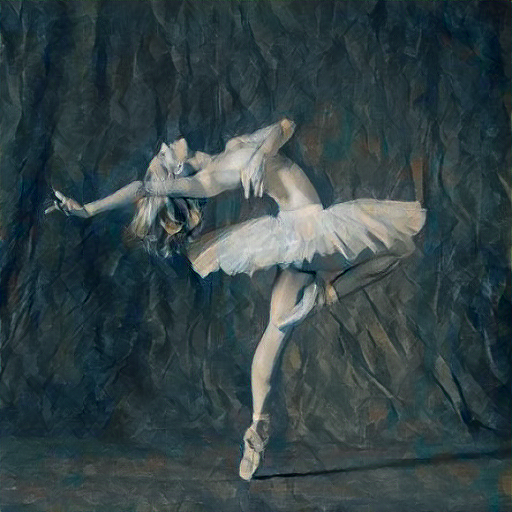
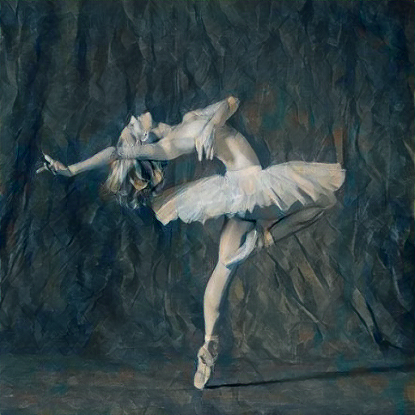
 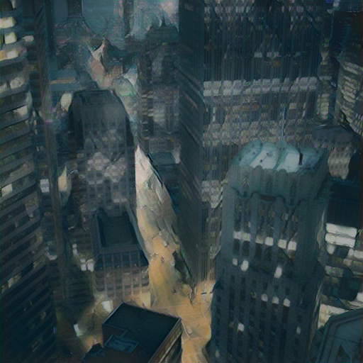
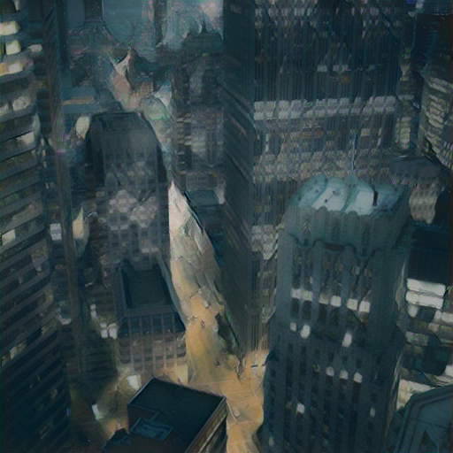
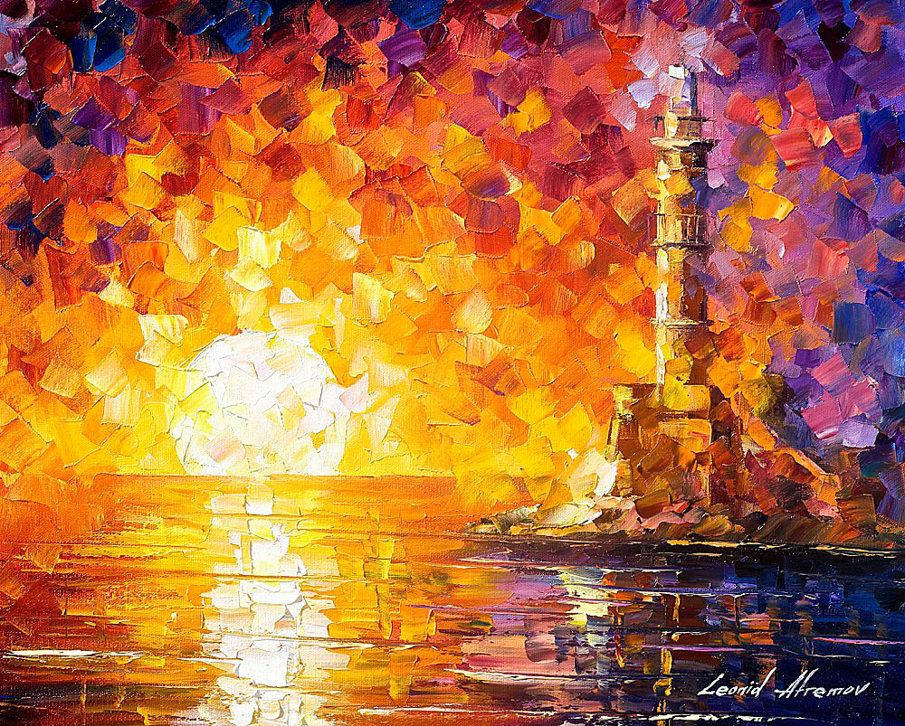
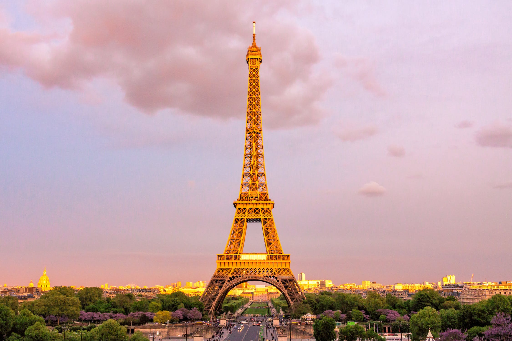
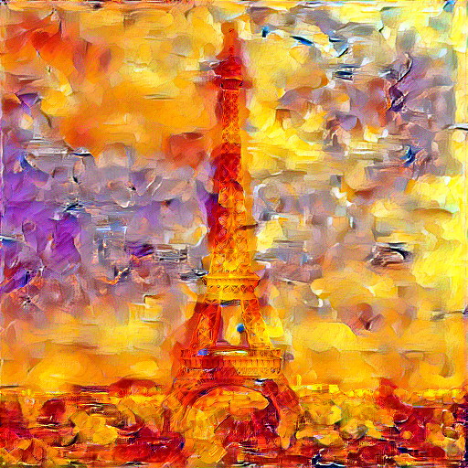
So far, we have built a working implementation of Neural Style Transfer based on the original Gatys et al. 2015 paper with a few tweaks. Most notably, we used the VGG19 CNN architecture rather than the VGG16 architecture described in the paper. We utilized a model pre trained on the ImageNet dataset to get this off of the ground and running quickly.
Thankfully, there were many tutorials online describing how to go about implementing Neural Style Transfer, and we found this one to be very helpful. After a bit of fine tuning and quite a bit of trial and error, we were able to get some interesting early results that we will discuss in the Preliminary Results section.
We first began by running this code locally on the CPU, which was convenient for debugging but horribly inefficient for iteration on new style transfer ideas. However, this was solved by adding GPU support for our model, which was fairly straightforward in PyTorch, and running our model in a Google Cloud deep learning instance. We were able to get significant runtime speedup, from ~10 minutes on CPU to ~30 seconds on GPU.
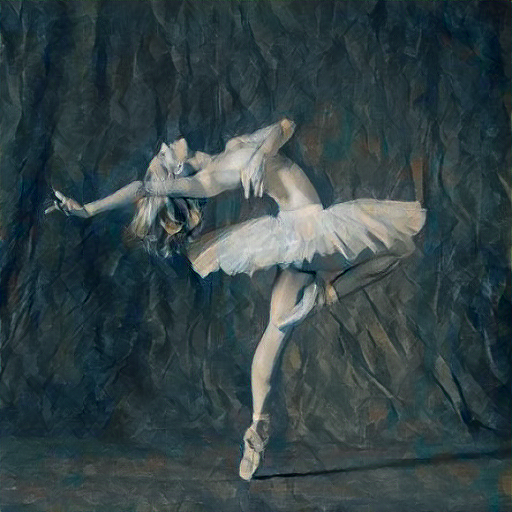
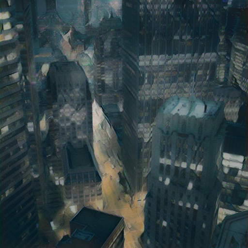
Currently, we are on track with our plans. Given the time constraints, we are quite proud of what we have been able to accomplish so far, but we definitely wish we could have had more time to explore some interesting ideas we came up with along the way.
Our current plan is to begin exploring some creative applications of style transfer with respect to generating bump maps, displacement maps, etc. If time allows, we hope to display some of the interesting results on a website with a Three.js component that will display our style transferred textures on 3D objects.